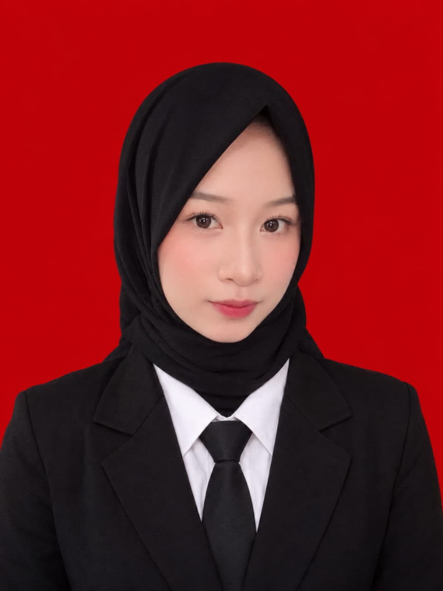

Instalasi Windows
Melakukan instalasi sistem operasi Windows.
TEKNISPORTFOLIO • 2026
Siswa SMK • Calon Tenaga Kerja Industri
Siswi Teknik Jaringan Komputer dan Telekomunikasi yang memiliki semangat belajar, disiplin, dan komitmen untuk terus berkembang serta memberikan kontribusi positif.

BERKEMBANG DENGAN RASA INGIN TAHU
✳DISIPLIN DALAM SETIAP PROSES
✳SIAP BELAJAR HAL BARU
01 — PROFILE
Saya merupakan siswi SMKN 1 Rengasdengklok jurusan Teknik Jaringan Komputer dan Telekomunikasi. Saya memiliki pengalaman Praktik Kerja Lapangan (PKL) dan ketertarikan untuk terus mengembangkan kemampuan di bidang jaringan komputer, telekomunikasi, serta dunia teknologi.
Memiliki kemampuan analisis, disiplin, komunikasi, dan kemauan belajar yang baik. Saya siap beradaptasi dengan lingkungan kerja serta menjalankan tanggung jawab secara sungguh-sungguh.
Baca ringkasan CV ↗02 — CAPABILITIES
Kemampuan yang dikembangkan melalui pembelajaran di sekolah dan pengalaman praktik.
Melakukan instalasi sistem operasi Windows.
TEKNISMemahami simulasi jaringan menggunakan Cisco.
TEKNISKonfigurasi dasar MikroTik dan pengaturan IP address.
TEKNISMelakukan praktik pemasangan konektor pada kabel LAN.
TEKNISMenyampaikan informasi dan berkoordinasi dengan baik.
SOFT SKILLMenggunakan Microsoft Word untuk kebutuhan dokumen.
APLIKASIMenganalisis masalah dan mencari solusi yang sesuai.
SOFT SKILLMendokumentasikan kegiatan melalui foto.
KREATIFMengatur waktu dan menyusun prioritas kegiatan.
SOFT SKILL* Deskripsi kemampuan disusun berdasarkan informasi profil yang diberikan.
03 — EXPERIENCE
Pengalaman Praktik Kerja Lapangan sebagai bagian dari proses mengenal lingkungan industri.
Unit Department
Daftar pekerjaan mengikuti keterangan pengalaman PKL yang diberikan.
04 — EDUCATION
Tahapan pendidikan yang membentuk dasar pengetahuan dan keterampilan.
Teknik Jaringan Komputer dan Telekomunikasi
SEDANG DITEMPUHPendidikan Sekolah Menengah Pertama
Pendidikan Sekolah Dasar
05 — ACTIVITIES
2024 — 2025
Anggota PMR dengan pengalaman kegiatan pertolongan pertama.
2022 — 2025
Anggota kegiatan badminton.
06 — CERTIFICATES
Dokumentasi partisipasi dan pencapaian dalam program pembelajaran.
Literasi Kecerdasan Artifisial
Senopat Academy, Polri (KADIV TIK POLRI), KemedikdasmenRuang Menyala / OCBC
Nama penerbit ditulis mengikuti data awal yang diberikan; silakan cocokkan kembali dengan ejaan pada sertifikat fisik/digital.
Pembelajar cepat yang siap beradaptasi, berdisiplin, dan berdedikasi untuk memberikan kontribusi nyata bagi tim.— SITI ALAWIYAH
LET'S CONNECT
Terbuka untuk komunikasi, kesempatan belajar, dan pengalaman baru.
Blok Kraton RT 27 RW 006, Desa Rengasdengklok Selatan, Kec. Rengasdengklok